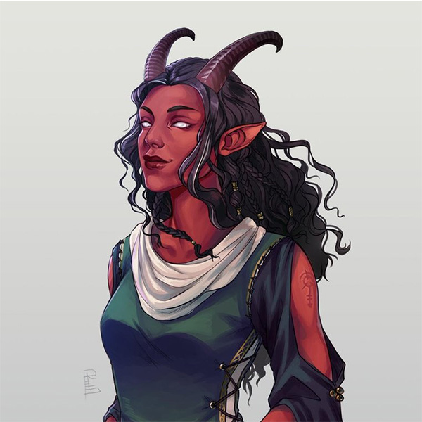

Tieflings
In Celestia, tieflings are deeply hated and discriminated against. They are considered to be unclean and evil due to their perceived association with demonic influence, despite the fact that tieflings, like any other race, can have a wide range of alignments and moral values. This prejudice against tieflings is deeply ingrained in the society of Celestia, and tieflings often face widespread ostracism and persecution.
In some parts of Celestia, tieflings are hunted just as fervently as arcane practitioners, due to the belief that they possess inherent malevolence and pose a threat to society. Tieflings are often scapegoated and blamed for any misfortune or calamity that occurs, regardless of their actual involvement. This has led to tieflings being marginalized and forced to live in fear and hiding, constantly on guard against prejudice and violence.
Parents who give birth to tiefling children are often met with shame and stigma. Many choose to abandon their tiefling children, claiming that the child died during birth, in order to avoid the social repercussions and ostracism that having a tiefling child brings. Husbands have been known to leave their wives who give birth to tiefling children, believing them to be unclean and tainted by demonic influence.
This systemic prejudice against tieflings in Celestia is deeply unjust and discriminatory, and it perpetuates a cycle of fear, hatred, and persecution against an entire race based on unfounded beliefs and stereotypes. Despite this harsh treatment, tieflings within Celestia often struggle to prove their worth and demonstrate their inherent goodness, fighting against the pervasive prejudice and striving for acceptance and equality in a society that views them with suspicion and fear.
